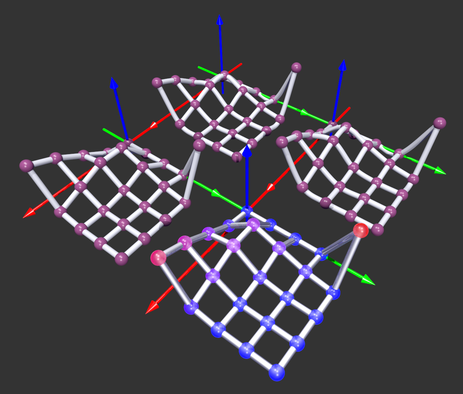

TABLE OF CONTENTS
- 1. ScPovPlot3D/LinearPlots.inc
- 2. Linearplots.inc/DrawBSplineWires()
- 3. Linearplots.inc/DrawCubicWires()
- 4. Linearplots.inc/DrawLinearWires()
- 5. Linearplots.inc/DrawNodePoints()
- 6. Linearplots.inc/DrawWireFrameRC(), DrawWireFrame()
- 7. Linearplots.inc/DrawWireFrameXY()
- 8. Linearplots.inc/ImportDataRC()
- 9. Linearplots.inc/ImportDataXY()
- 10. Linearplots.inc/AddColDescr()
- 11. Linearplots.inc/AddRowDescr()
- 12. Linearplots.inc/DrawColDscr()
- 13. Linearplots.inc/DrawRowDscr()
- 14. Linearplots.inc/DrawVrtDescr()
- 15. Linearplots.inc/InitDscrColAxe()
- 16. Linearplots.inc/InitDscrRowAxe()
- 17. Linearplots.inc/SetBgPicture()
- 18. Linearplots.inc/SetColor()
- 19. Linearplots.inc/SetDscrAngle()
- 20. Linearplots.inc/SetInterior()
- 21. Linearplots.inc/SetLettrBase()
- 22. Linearplots.inc/SetLettrDepth()
- 23. Linearplots.inc/SetLettrSize()
- 24. Linearplots.inc/SetMaterial()
- 25. Linearplots.inc/SetNodeRadiiCoeff(Coeff)
- 26. Linearplots.inc/SetTexture()
- 27. Linearplots.inc/SetWireRadiiCoeff(Coeff)
- 28. Linearplots.inc/TurnPhotonsDown(), TurnPhotonsUp()
- 29. Linearplots.inc/DeclareLevel
ScPovPlot3D/LinearPlots.inc [ Modules ]
PURPOSE
Macros for representation of 3D linear plots of scatter 2D data ie. y=f(x).

Fig.[WireFrame] Linear (twice), Cubic and BSpline interpolation
********************************************************* ** Tested on PovRay 3.7 ** ** License: GNU GPL ** ** Homepage: http://scpovplot3d.sourceforge.net ** ********************************************************* ** version: 3.0.6 (& have a nice time ;) ** *********************************************************AUTHOR
Janusz Opi쓰 Ph.D.
jmo@agh.edu.pl, janusz.opila@gmail.com Dept. of Applied Informatics AGH University of Science & Technology, Cracow, Poland Maintained by Janusz Opi쓰 Ph.D.COPYRIGHT
GNU GPL v.3 License (c) 2012-now by Janusz Opi쓰 Ph.D. AGH University of Science and Technology
Linearplots.inc/DrawBSplineWires() [ Main macros ]
[ Top ] [ Main macros ]
PURPOSE
Draws surface representation in the form of grid of LINEAR splines, ie. straight cuts of line
SYNOPSIS
DrawBSplineWires(float _wireR, boolean _Sphrs)INPUTS
_wireR - float = radii of the wire _Sphrs - boolean = draw spheres in place of nodes? yes/noSEE ALSO
ImportDataRC() ImportDataXY() DrawNodePoints() DrawLinearWires() DrawCubicWires()
Linearplots.inc/DrawCubicWires() [ Main macros ]
[ Top ] [ Main macros ]
PURPOSE
Draws surface representation in the form of grid of LINEAR splines, ie. straight cuts of line
SYNOPSIS
DrawCubicWires(float _wireR, boolean _Sphrs)INPUTS
_wireR - float = radii of the wire _Sphrs - boolean = draw spheres in place of nodes? yes/noSEE ALSO
ImportDataRC() ImportDataXY() DrawNodePoints() DrawLinearWires() DrawBSplineWires()
Linearplots.inc/DrawLinearWires() [ Main macros ]
[ Top ] [ Main macros ]
PURPOSE
Draws surface representation in the form of grid of LINEAR splines, ie. straight cuts of line
SYNOPSIS
DrawLinearWires(float _wireR, boolean _Sphrs)INPUTS
_wireR - float = radii of the wire _Sphrs - boolean = draw spheres in place of nodes? yes/noSEE ALSO
ImportDataRC() ImportDataXY() DrawNodePoints() DrawCubicWires(), DrawBSplineWires()
Linearplots.inc/DrawNodePoints() [ Main macros ]
[ Top ] [ Main macros ]
PURPOSE
Draws grid data points as ellipsoids ie. spheres scaled along vertical axis by _scl factor. If _scl equals 1 one obtains pure sphere, however it can be lower or bigger than 1 This macro is designed to visualize uncertainty at given grid point
SYNOPSIS
DrawNodePoints(float _scl)INPUTS
_scl - scaling factor along vertical axis, not perpendicularly to the surface! this is intended for representation of uncertainty of the data (SD? SEM?)
Linearplots.inc/DrawWireFrameRC(), DrawWireFrame() [ Main macros ]
[ Top ] [ Main macros ]
PURPOSE
Draws representation od data from input file as wireframed 3D surface. Input data is organized as a matrix of floats separated by commas. This macro is intendend for visualisation of matrices thus "RC" suffix (Row/Column). macro DrawWireFrame(DataFileName) is just backward compatibility wrapper
SYNOPSIS
DrawWireFrameRC(string filename DataFileName)INPUTS
DataFileName - valid name of file with data - see example file for details of its structure. Generally speaking first is Column axis title, Row Yaxis title, number of columns, then min and max value assigned to the first and last item in row, number of rows, then min and max value assigned to the first and last item in column, eventually numeric data in form of matrix, ie. data measured, observed or calculated over the gridSEE ALSO
DrawWireFrameYX()
SOURCE
/// #macro DrawWireFrameRC(DataFileName) is intendend for visualisation of matrices /// interpretation of structure of input file (r=Row, c=Column): /// * -----> Column ----> /// | r1c1 r1c2 r1c3 r1c3 /// | r2c1 /// | r3c1... /// V r4c1.. /// Rows /// ie. rows are treated as rows of the matrix so they are drawn /// along PovRAY X axis (which is Y in REAL coords).
Linearplots.inc/DrawWireFrameXY() [ Main macros ]
[ Top ] [ Main macros ]
PURPOSE
Draws representation od data from input file as wireframed 3D surface. Input data is organized as a matrix of floats separated by commas. This macro is intendend for visualisation of gridded data thus "YX" suffix.
SYNOPSIS
DrawWireFrameXY(string filename DataFileName)INPUTS
DataFileName - valid name of file with data - see example file for details of its structure. Generally speaking first is Xaxis title, Yaxis title, number of columns, then min and max value assigned to the items in first and last X column respectively (along POVRay X axis), number of rows, then min and max value assigned to the items in first and last row respectively (along POVRay -Z axis), eventually numeric data in form of matrix, ie. data measured, observed or calculated over the real XY gridSOURCE
/// interpretation of structure of input file: /// * -----> X ----> /// | x1y1 x1y2 x1y3 x1y3 /// | x2y1 /// Y| x3y1... /// V X4y1.. /// ie. rows are treated as x-data so they are drawn /// along REAL X axis (which is -Z in PovRAY coords) ,
Linearplots.inc/ImportDataRC() [ Main macros ]
[ Top ] [ Main macros ]
PURPOSE
Imports only data from input file. Input data is organized as a matrix of floats separated by commas. This macro is part of visualisation suite of matrices thus "RC" suffix (Row/Column).
SYNOPSIS
ImportDataRC(string filename DataFileName)INPUTS
DataFileName - valid name of file with data - see example file for details of its structure. Generally speaking first is Column axis title, Row Yaxis title, number of columns, then min and max value assigned to the first and last item in row, number of rows, then min and max value assigned to the first and last item in column, eventually numeric data in form of matrix, ie. data measured, observed or calculated over the gridSOURCE
/// structure of the grid is interpreted as follows: /// * -----> Col ----> /// R| r1c1 r1c2 r1c3 r1c4 /// o| r2c1 /// w| r3c1... /// V r4c1.. /// ie. rows are treated as x-data so they are drawn along REAL X axis (PovRAY '-Z')
Linearplots.inc/ImportDataXY() [ Main macros ]
[ Top ] [ Main macros ]
PURPOSE
Imports representation od data from input file. Input data is organized as a matrix of floats separated by commas. This macro is intendend for visualisation of gridded data thus "YX" suffix.
SYNOPSIS
ImportDataXY(string filename DataFileName)INPUTS
DataFileName - valid name of file with data - see example file for details of its structure. Generally speaking first is Xaxis title, Yaxis title, number of columns, then min and max value assigned to the items in first and last X column respectively (along POVRay X axis), number of rows, then min and max value assigned to the items in first and last row respectively (along POVRay -Z axis), eventually numeric data in form of matrix, ie. data measured, observed or calculated over the real XY gridSOURCE
/// structure of the grid is interpreted as follows: /// * -----> X real axis ----> /// | x1y1 x2y1 x3y1 x4y1 /// | x1y2 /// Y| x1y3... /// V X1y4.. /// ie. rows are treated as x-data so they are drawn /// along REAL X axis /-Z in PovRAY coords/ ,
Linearplots.inc/AddColDescr() [ Helper macros ]
[ Top ] [ Helper macros ]
PURPOSE
Inserts into horizontal axis data block new major label
SYNOPSIS
AddColDescr(string Dscr)INPUTS
Dscr - label ("1", "A" or so on..)
Linearplots.inc/AddRowDescr() [ Helper macros ]
[ Top ] [ Helper macros ]
PURPOSE
Inserts into 2nd horizontal axis data block new major label
SYNOPSIS
AddRowDescr(string Dscr)INPUTS
Dscr - label ("1", "A" or so on..)
Linearplots.inc/DrawColDscr() [ Helper macros ]
[ Top ] [ Helper macros ]
PURPOSE
Inserts into rendering stack description of horizontal axis
SYNOPSIS
DrawColDscr(texturedef _Txtr, float _LettrBase, float _LettrSize, float _LettrDepth)INPUTS
_Txtr - texture definition _LettrBase - adjustment to the position of description _LettrSize - Size of characters in description Text _LettrDepth - thickness of characters in description Text
Linearplots.inc/DrawRowDscr() [ Helper macros ]
[ Top ] [ Helper macros ]
PURPOSE
Inserts into rendering stack description of 2nd horizontal axis
SYNOPSIS
DrawRowDscr(texturedef _Txtr, float _LettrBase, float _LettrSize, float _LettrDepth)INPUTS
_Txtr - texture definition _LettrBase - adjustment to the position of description _LettrSize - Size of characters in description Text _LettrDepth - thickness of characters in description Text
Linearplots.inc/DrawVrtDescr() [ Helper macros ]
[ Top ] [ Helper macros ]
PURPOSE
Draws automatically vertical axis description,
SYNOPSIS
DrawVrtDescr(uinteger _NVrt, texturedef _Texture)INPUTS
_NVrt - number of major tics _Texture - texture identifier
Linearplots.inc/InitDscrColAxe() [ Helper macros ]
[ Top ] [ Helper macros ]
PURPOSE
Initializes description data block along horizontal axis (columns)
SYNOPSIS
InitDscrColAxe(uinteger N)INPUTS
N - number of categories
Linearplots.inc/InitDscrRowAxe() [ Helper macros ]
[ Top ] [ Helper macros ]
PURPOSE
Initializes description data block along horizontal axis (rows)
SYNOPSIS
InitDscrRowAxe(uinteger N)INPUTS
N - number of categories
Linearplots.inc/SetBgPicture() [ Helper macros ]
[ Top ] [ Helper macros ]
PURPOSE
Sets picture for the background of coords system Will be moved to CoordsSys.inc
SYNOPSIS
SetBgPicture(string filename Pct)
Linearplots.inc/SetColor() [ Helper macros ]
[ Top ] [ Helper macros ]
PURPOSE
Sets default color for different items:
- SetColor( color vector FullColour )
- SetRGBColor( float R, float G, float B) - for RGB definition style
- SetRGBFTColor( float R, float G, float B, float F, float T) for RGBFT definition
- SetRGBFTColor_1( float R, float G, float B, float F, float T) and
- SetRGBFTColor_2( float R, float G, float B, float F, float T) two-color RGBFT items
Linearplots.inc/SetDscrAngle() [ Helper macros ]
[ Top ] [ Helper macros ]
PURPOSE
Sets base angle of description of axes (category labels)
SYNOPSIS
SetDscrAngle(float)
Linearplots.inc/SetInterior() [ Helper macros ]
[ Top ] [ Helper macros ]
PURPOSE
declares texure for the item
SYNOPSIS
SetInterior( interiordef tInt )
Linearplots.inc/SetLettrBase() [ Helper macros ]
[ Top ] [ Helper macros ]
PURPOSE
Sets base position of letters in description of axes
SYNOPSIS
SetLettrBase(float ls)
Linearplots.inc/SetLettrDepth() [ Helper macros ]
[ Top ] [ Helper macros ]
PURPOSE
Sets size of letters in description of axes
SYNOPSIS
SetLettrDepth(float ls)
Linearplots.inc/SetLettrSize() [ Helper macros ]
[ Top ] [ Helper macros ]
PURPOSE
Sets size of letters in description of axes
SYNOPSIS
SetLettrSize(float ls)
Linearplots.inc/SetMaterial() [ Helper macros ]
[ Top ] [ Helper macros ]
PURPOSE
declares material for the item
SYNOPSIS
SetMaterial( materialdef FullMaterial )
Linearplots.inc/SetNodeRadiiCoeff(Coeff) [ Helper macros ]
[ Top ] [ Helper macros ]
PURPOSE
declares radius coefficient for the wire and nodes
SYNOPSIS
SetNodeRadiiCoeff(float Coeff)
Linearplots.inc/SetTexture() [ Helper macros ]
[ Top ] [ Helper macros ]
PURPOSE
declares texure for the item
SYNOPSIS
SetTexture( texturedef FullTexture )
Linearplots.inc/SetWireRadiiCoeff(Coeff) [ Helper macros ]
[ Top ] [ Helper macros ]
PURPOSE
declares radius coefficient for the wire only
SYNOPSIS
SetWireRadiiCoeff(float Coeff)
Linearplots.inc/TurnPhotonsDown(), TurnPhotonsUp() [ Helper macros ]
[ Top ] [ Helper macros ]
PURPOSE
Sets internal variable Photons to 'no' or 'yes' ie turns photon mechanism 'off' or 'on'
SYNOPSIS
TurnPhotonsUp() TurnPhotonsDown()
Linearplots.inc/DeclareLevel [ Variables ]
PURPOSE
DeclareLevel determines what is defined:
- 0 = colour only
- 2 = also texture
- 4 = complete material
this value is valid until next "Set...()" declaration is met SOURCE */